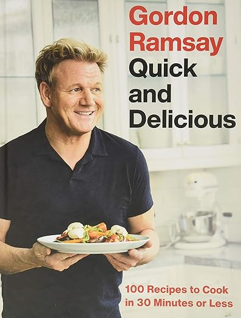

Welcome to my Food Blog
I am a father to a one year old and husband to my wife of 10 years. I have also recently learned I have a passion for cooking. I have travelled the world tasting some amazing food. From Nepal to Brazil to Amsterdam. I hope to try to cook everything I can and keep making them more delicious. In this blog I will post pictures of my food and where I learned them. Hope you enjoy!
Food Pics
Recipes
The crab pasta I made came from this Gordon Ramsay cookbook. Its a wonderful cookbook with recipes from easy to advanced. The crab pasta was somewhere in the middle.
The pan fried salmon with spicy mayo and sticky rice recipe I made came from Maangchi's wonderful cookbook. This recipe was so delicious and easy to make. It's become one our go to recipes when we don't want to go crazy in the kitchen but want something better than a frozen meal.
The beautiful charcuterie-board was shown to me by my cousin Usha. She is a wonderful person with serious skills making those salami roses. I hope to continue what she has shown me and keep improving.
The fried rice I made came from the above video. She has many delicous recipes that I cant wait to try. This fried rice I can't help but make at least once a week (sorry wifey). It's just too good!
Advice
My advice to anyone starting a new journey with cooking or any other passion is this: Get started, have confidence in yourself, and be patient. There is a quote that I love and have told my soccer teams that I have coachedPractice puts brains in your muscles
Sam Snead
It's a simple but powerful quote. The more you practice the better you will get. Keep going. You might not be great now but no one ever starts that way. Keep going, keep practicing, and before you know it you will be a master of your craft.